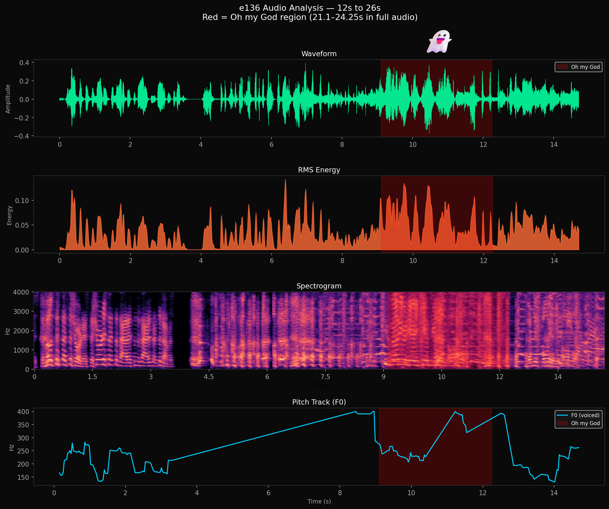

ASR Forensics · Episode E136
Chasing Ghosts: capturing nearly imperceptible spoken words
"Chasing ghosts" refers to the forensic process of investigating moments where speech clearly exists in the recording, but never appears in the transcript.
E136's opening shows how quickly modern ASR systems can fail under real conversational audio, where in roughly fifteen seconds four distinct failure conditions occur simultaneously. (YouTube)
- Speaker mimicry — Chamath imitating Jcal's voice
- Group laughter
- Muffled speech — Friedberg's nearly imperceptible "Oh, my god" muttering
- Intro music with lyrics
Why this example matters: The segment required more than two dozen pipeline iterations before it appeared reliably in the transcript. Each run completed successfully and produced no warnings.
The speech was always present in the recording, but the transcription system silently omitted it.
This is a specific kind of failure — one that's easy to overlook precisely because nothing breaks. No error is thrown. No flag is raised. The pipeline completes and returns a transcript that looks complete. The comparison below is meant to illustrate why silent omission is the hardest failure mode to defend against: in every other well-known case of lost speech, someone at least knew to go looking.
| Scenario | Audio exists | Someone knows it's missing | Recoverable |
|---|---|---|---|
| Watergate tapes | ❌ erased | ✅ yes — the gap was known | ❌ no |
| Cockpit voice recorders | ✅ present | ✅ yes — investigators know to check | ⚠️ partially |
| This ASR case | ✅ present | ❌ no — the transcript looks fine | ⚠️ only if someone goes looking |
The Watergate gap was damaging because the audio was gone. This case is more insidious: the audio exists, the transcript exists, and neither one signals that anything is wrong. At scale, that means omissions accumulate invisibly — and the training data reflects a version of events that never happened.
Without intentional forensic inspection of the audio, nothing indicates that Friedberg's "Oh, my god." was lost. Although this example is a short utterance, there could be omissions that are larger — and omissions propagate throughout the dataset: original speech disappears while other speakers' reactions to it remain.

Waveform · RMS Energy · Spectrogram · Pitch Track — 12s to 26s.
Red = "Oh my God" region (21.1–24.25s)
Waveform — the red region contains clear amplitude variation. The signal is present and structured; it is not silence.
RMS Energy — energy is sustained across the entire window. Both Silero and MarbleNet VAD systems flagged this region as speech.
Spectrogram — the red window shows dense harmonic structure across roughly 0–2kHz, consistent with voiced human speech rather than background noise or music bleed.
Pitch Track (F0) — a continuous fundamental frequency is tracked through the region, rising and then falling with natural intonation. This indicates a single speaker producing a voiced utterance.
All four panels agree: a human spoke. The signal was real, the energy was present, and the pitch was trackable. WhisperX on the 16kHz mono WAV still missed it — not because the audio was absent, but because the conversion degraded the spectral detail needed for confident phoneme resolution.
The ghost was always there. The pipeline simply failed to see it.
[
{
"start":5.207,
"end":9.668,
"speaker":"friedberg",
"text":"How does J. Cal open the show? What does he say? Hey, everybody."
},
{
"start":10.208,
"end":10.988,
"speaker":"friedberg",
"text":"Yeah, do it, Chamath."
},
{
"start":12.028,
"end":19.870,
"speaker":"chamath",
"text":"Hey, everybody. Hey, everybody. I'm Jason Calacanis..."
},
{
"start":21.110,
"end":24.251,
"speaker":"friedberg",
"text":"Oh, my God."
},
{
"start":25.271,
"end":26.691,
"speaker":"friedberg",
"text":"He's not even here. You can't do that."
}
][
{
"start":5.207,
"end":9.668,
"speaker":"friedberg",
"text":"How does J. Cal open the show? What does he say? Hey, everybody."
},
{
"start":10.208,
"end":10.988,
"speaker":"friedberg",
"text":"Yeah, do it, Chamath."
},
{
"start":12.028,
"end":19.870,
"speaker":"chamath",
"text":"Hey, everybody. Hey, everybody. I'm Jason Calacanis..."
},
{
"start":25.271,
"end":26.691,
"speaker":"friedberg",
"text":"He's not even here. You can't do that."
}
]